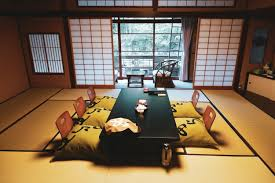

Konbini Magic (Convenience Stores)
Don't underestimate 7-Eleven, Lawson, and FamilyMart. They offer fresh, high-quality, and incredibly cheap meals. Look for onigiri (rice balls), sandwiches, and bento boxes. They often have sales near closing time!
Japanese food doesn't have to be expensive. Here are the secrets to fueling your trip without spending all your yen.
Don't underestimate 7-Eleven, Lawson, and FamilyMart. They offer fresh, high-quality, and incredibly cheap meals. Look for onigiri (rice balls), sandwiches, and bento boxes. They often have sales near closing time!
Seek out small, local ramen or soba shops, often marked by a simple curtain (noren). A delicious, hot bowl can often be found for under ¥1000 ($6.58 US Dollars). Look for ticket vending machines outside—they mean fast, cheap service.
If you're near a major supermarket (like SEIYU or LIFE) near 8 PM, you'll often find significant discounts (30-50% off) on prepared foods like sushi, tempura, and grilled fish. A perfect budget dinner!
Where to rest your head without emptying your wallet.
The most common budget option. Modern Japanese hostels are clean, safe, and often feature excellent common areas. Expect prices around ¥2500 - ¥4000 ($16.45 to $26.32 US Dollars) per night.
A uniquely Japanese experience. Though they can sometimes be more expensive than hostels, they offer privacy and a quiet pod. Great for a single night, often costing ¥3000 - ¥5500 ($19.73 to $36.18 US Dollars).
Finding a cheap ryokan (traditional inn) is a challenge, but possible outside major cities. Look for small, family-run establishments in less touristy areas for a taste of traditional hospitality for around ¥6000 ($39.49 US Dollars).
